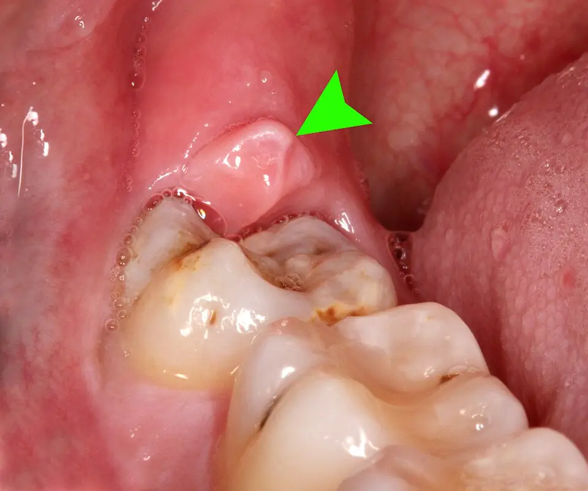

DX.5 — Péricoronarite
La péricoronarite se soigne d'abord par des gestes locaux ; le danger tient à l'infection qui diffuse vers la face et les voies aériennesS1S2. Le trismus important et la tuméfaction du plancher buccal font donc changer de filière, du dentiste vers l'hôpitalS2.
1. Définition
Le Scottish Dental Clinical Effectiveness Programme (SDCEP) définit la péricoronarite aiguë comme l'infection ou l'inflammation de l'opercule, gencive qui recouvre une dent partiellement sortieS1.
L'opercule et la dent en cause
| Terme | Ce qu’il désigne | Source |
|---|---|---|
| Opercule | Gencive qui recouvre la couronne d’une dent partiellement sortie | S1 |
| Dent semi-incluse | Dent partiellement visible dans la cavité buccale | S4 |
| Dent incluse | Dent non visible, recouverte par la gencive et par l’os | S4 |
| Péricoronarite | Inflammation et infection de la gencive autour de la dent partiellement sortie | S4 |
Les Hôpitaux universitaires de Genève (HUG) emploient la même définition dans leur page sur l'extraction des dents de sagesse, mise à jour en 2025S4. La dent en cause est surtout la troisième molaire, mais le SDCEP inclut aussi la douleur des dents en éruption chez l'enfantS1S4.
2. Épidémiologie (Suisse, puis Europe)
Aucune incidence suisse en population n'a été lue ; deux séries universitaires suisses placent toutefois la péricoronarite en tête des complications des dents de sagesse inférieuresS5S6. Les chiffres suisses, le terrain exposé et l'évolution naturelle expliquent son rang 5 dans la liste de la Phase AS5.
Fréquence — séries suisses, puis repère européen
| Source | Population | Chiffre lu | Lecture |
|---|---|---|---|
| Bâle, 1992–1999S6 | 3980 dents de sagesse opérées chez 1898 patients | 462 dents opérées pour péricoronarite, première indication thérapeutique | La péricoronarite motive le plus grand nombre d’extractions thérapeutiques |
| Zurich et Bâle, 2013S5 | Revue d’un cas et de la littérature | Symptôme le plus fréquent et complication la plus courante des dents de sagesse inférieures | Elle précède la carie, la parodontite et la carie de la deuxième molaire |
| HUG, 2025S4 | Jeunes adultes sans symptômes | Deux tiers présentent une pathologie dans la région des dents de sagesse | Le terrain anatomique reste très répandu |
| Angleterre, 2000S8 | Dents de sagesse incluses sans pathologie | Extraction prophylactique à abandonner | La fréquence ne justifie pas d’opérer sans épisode |
La série bâloise compte des dents et non des patients, si bien qu'elle mesure une charge chirurgicale plutôt qu'une incidenceS6. Le rang 5 de la Phase A repose donc sur un argument clinique sourcé, faute d'incidence suisse ou européenne lueS5.
Terrain exposé
| Facteur | Effet observé | Source |
|---|---|---|
| Dent de sagesse inférieure semi-incluse | Siège habituel de l’opercule infecté | S1S4 |
| Tabagisme | Lien significatif avec la péricoronarite dans la série bâloise, régions 38 et 48 | S6 |
| Péricoronarite antérieure | Risque d’infection postopératoire multiplié par 2,799 dans le troisième quadrant | S6 |
| Immunodépression | Seuil plus bas pour l’antibiotique et pour le transfert hospitalier | S2 |
| Diabète mal équilibré | Risque élevé de complication infectieuse justifiant l’antibiotique | S2S3 |
Le tabagisme apparaît comme facteur associé dans une analyse rétrospective ; la série ne démontre donc pas une causalitéS6.
Évolution naturelle et gravité
La tuméfaction reste d'abord gingivale, puis elle peut s'étendre à la face, surtout autour d'une molaire inférieureS1. Une ouverture buccale limitée, une gêne à la déglutition ou de la fièvre signent alors une infection qui diffuseS1S3.
| Stade | Signes | Conséquence |
|---|---|---|
| Locale | Douleur autour de la dent, opercule rouge et gonflé | Soins locaux et antalgie, sans antibiotiqueS1 |
| Diffusion | Ouverture limitée, tuméfaction faciale | Antibiotique en plus des soins locauxS1 |
| Systémique | Fièvre, nausées, fatigue | Antibiotique et réévaluation rapprochéeS1S2 |
| Grave | Trismus important, tuméfaction du plancher buccal, gêne respiratoire | Transfert hospitalier en urgenceS2 |
Les épisodes se répètent sur la même dent, ce qui conduit à l'extraction après un second épisode selon le National Institute for Health and Care Excellence (NICE)S8.
3. Physiopathologie
La troisième molaire sort tard et manque de place, ce qui la laisse souvent semi-incluse sous un capuchon gingivalS4. Les débris et les bactéries s'y accumulent, puis la dent antagoniste peut blesser l'opercule enflammé à chaque fermetureS1. Le trismus traduit l'extension de l'inflammation aux muscles masticateurs voisinsS9.
Mécanisme — de la dent semi-incluse à l’infection
- La dent de sagesse dispose de moins de place que les autres dents dans l'arcade, si bien qu'elle reste incluse ou semi-incluseS4.
- L'opercule recouvre une partie de la couronne et retient un corps étranger que le dentiste devra délogerS1.
- La dent antagoniste traumatise l'opercule enflammé lorsque sa position l'empêche d'atteindre une fonction utileS1.
- L'infection reste locale, puis elle peut gagner la joue et la face autour de la molaire inférieureS1.
Le SDCEP propose d'ailleurs d'extraire ou d'ajuster la dent antagoniste qui blesse l'opercule, ce qui confirme ce mécanisme traumatiqueS1.
Trismus — pourquoi la bouche s’ouvre mal
Dans l'abcès périamygdalien, le trismus provient de l'inflammation et du spasme des muscles masticateurs, ptérygoïdiens et temporaux homolatérauxS9. Le même voisinage musculaire explique la limitation d'ouverture de la péricoronarite, déduction tirée de la position rétromolaire de la dentS9S1.
Opercule sur une dent de sagesse inférieure droite. Cette photographie clinique en couleurs montre la dent 48 partiellement sortie, recouverte en arrière par un opercule gingival qu'une flèche verte désigneS16.

Lisez d'abord seul ce cliché (opercule de la dent de sagesse inférieure droite) : cherchez vous-même le signe.
La copie annotée (opercule de la dent de sagesse inférieure droite) montre les repères numérotés que décrit la lecture guidée.
- 1. L'opercule est un capuchon de gencive brillante et gonflée qui couvre la partie distale de la couronne.S16
- 2. La couronne de la dent 48 reste en partie cachée, ce qui définit la dent semi-incluse.S16
- 3. La deuxième molaire, au premier plan, est entièrement sortie et indique la position normale de l'arcade.S16
- 4. La langue occupe le bord droit, si bien que l'espace rétromolaire reste étroit entre la langue et la joue.S16
Ce que l'image décide. L'opercule se voit ; la gravité se juge sur l'ouverture buccale, la tuméfaction et la fièvreS1S16.
4. Démarche diagnostique
La démarche cherche d'abord une menace des voies aériennes, puis elle juge l'extension de l'infection avant de choisir entre soins locaux et antibiotiqueS1S2. Le tableau des étapes fixe les questions dans l'ordre ; les diagnostics graves sont écartés avant la conclusionS1S9.
Démarche diagnostique — étapes ordonnées
| Étape | Question | Seuil ou signe | Conduite |
|---|---|---|---|
| 1 | Les voies aériennes sont-elles menacées ? | Difficulté respiratoire, stridor, dysphagie, voix étoufféeS1 | Urgences hospitalières immédiates |
| 2 | L’infection est-elle grave ? | Trismus important, tuméfaction du plancher buccal, cellulite rapidement extensiveS2 | Transfert hospitalier en urgence |
| 3 | L’infection diffuse-t-elle ? | Ouverture limitée, tuméfaction faciale, déglutition gênée, fièvreS1S3 | Antibiotique en plus des soins locaux |
| 4 | Le patient est-il fragile ? | Immunodépression, diabète mal équilibréS2 | Seuil plus bas pour l’antibiotique |
| 5 | Le foyer est-il bien l’opercule ? | Douleur localisée autour d’une dent semi-incluse, opercule rougeS1 | Soins locaux et antalgie |
| 6 | Existe-t-il des signes d’infection ? | Aucun signe infectieux malgré la douleur et l’ouverture limitéeS1 | Évoquer le trouble temporo-mandibulaire |
Les températures, le pouls et la tension artérielle mesurés avant un transfert sont consignés dans le dossier, comme le demande le SDCEPS2.
Diagnostics graves à écarter
| Diagnostic | Indice qui le fait suspecter | Conduite |
|---|---|---|
| Abcès périamygdalien | Odynodysphagie latéralisée, voile bombé, luette déviée, voix modifiéeS9 | Ponction et drainage hospitalier |
| Cellulite diffuse | Tuméfaction diffuse d’embléeS7 | Antibiotique, consultation urgente, hospitalisation à discuter |
| Angine de Ludwig ou sepsis | Voies aériennes menacéesS2 | Appel immédiat d’une ambulance |
| Angine de Vincent | Ulcération amygdalienne unilatérale grise chez un patient avec infection buccodentaireS9 | Prise en charge de l’angine ulcéreuse |
La péricoronarite figure parmi les facteurs de risque de l'angine de Vincent, ce qui impose de regarder les amygdalesS9.
5. Anamnèse ciblée et drapeaux rouges
L'anamnèse précise le siège et le cortège de la douleur, puis elle recherche les drapeaux rouges et le terrain qui abaissent le seuil d'antibiotiqueS1S2.
Questions ciblées et réponses attendues
| Question | Réponse évocatrice | Source |
|---|---|---|
| Où siège la douleur ? | Douleur bien localisée autour d’une dent partiellement sortie, souvent au fond de la bouche | S1S4 |
| La gencive a-t-elle gonflé ? | Gonflement autour de la dent, parfois étendu au visage | S1 |
| Avaler est-il gênant ? | Gêne à la déglutition | S1 |
| La bouche s’ouvre-t-elle bien ? | Ouverture limitée | S1S4 |
| Le goût est-il changé ? | Goût ou odeur désagréable venant de la zone | S1 |
| Existe-t-il de la fièvre ? | Fièvre, nausées ou fatigue | S1 |
| Un épisode identique a-t-il déjà eu lieu ? | Épisodes répétés sur la même dent | S1S8 |
Drapeaux rouges
| Drapeau rouge | Ce qu’il signifie | Conduite |
|---|---|---|
| Difficulté respiratoire ou stridor | Voies aériennes menacées | Urgences immédiatesS1 |
| Dysphagie ou voix étouffée | Extension profonde | Urgences immédiatesS1 |
| Trismus important | Infection sévère qui diffuse | Transfert hospitalierS2 |
| Tuméfaction du plancher buccal | Atteinte d’un espace profond | Transfert hospitalierS2 |
| Cellulite rapidement extensive | Infection rapidement progressive | Transfert hospitalierS2 |
Un seul drapeau rouge suffit à changer de filière, car le SDCEP demande alors le transfert sans attendre l'effet d'un antibiotiqueS2.
Terrain et médicaments à demander
| Élément | Pourquoi le demander | Source |
|---|---|---|
| Immunodépression | Seuil plus bas pour l’antibiotique, la discussion hospitalière et le transfert | S2 |
| Allergie aux pénicillines | Clindamycine ou céphalosporine à la place de l’aminopénicilline | S3 |
| Grossesse ou allaitement | Restrictions des antibiotiques et de l’ibuprofène dans les informations professionnelles suisses (AIPS) | S10S14 |
| Antibiotiques répétés ou infection à Clostridioides difficile | Prudence avec les antibiotiques | S2 |
| Tabagisme | Facteur associé à la péricoronarite | S6 |
6. Examen physique ciblé, région par région
L'examen suit les régions dans l'ordre : état général et voies aériennes, face et cou, ouverture buccale, opercule, dent antagoniste, puis pharynxS1S2S9.
Région 3 — Ouverture buccale
Le médecin demande au patient d'ouvrir grand, puis il compare l'ouverture à la normale et note la gêneS1. Une ouverture limitée signe une infection qui diffuse, alors qu'un trismus important impose l'hôpitalS1S2.
Le cas zurichois de 2013 note une ouverture interincisive maximale améliorée à 32 mm après traitement, chiffre qui illustre le suivi mesuré du trismusS5.
Région 6 — Pharynx et amygdales
L'examinateur regarde le voile, la luette et les amygdales, car un voile bombé avec luette déviée oriente vers l'abcès périamygdalienS9. Une ulcération amygdalienne grise et unilatérale évoque l'angine de Vincent, dont la péricoronarite est un facteur de risqueS9.
7. Approche syndromique
La péricoronarite appartient aux douleurs dentaires infectieuses ; elle se distingue de la pulpite, de l'abcès dentaire 🚩 E3, du trouble temporo-mandibulaire et de l'abcès périamygdalien 🚩 E1S1S9S7. Le tableau de synthèse rassemble les quatre diagnostics.
Péricoronarite contre pulpite
La pulpite est une inflammation douloureuse que l'antibiotique ne soulage pas, comme le rappelle le SDCEPS2. Elle siège dans une dent cariée sans opercule, alors que la péricoronarite siège dans la gencive ; voir la pulpite (DX.1)S1S2.
Péricoronarite contre abcès dentaire
L'abcès dentaire est une complication de la carie non traitée ou de la pulpite, et il siège à l'apex ou contre la racineS7. La péricoronarite naît au contraire de l'opercule d'une dent qui sort ; le cours de l'abcès dentoalvéolaire (DX.2) 🚩 E3 détaille le drainageS1S7.
Péricoronarite contre trouble temporo-mandibulaire
Le SDCEP souligne que les deux affections donnent une douleur et une ouverture limitée ; l'absence de signe infectieux oriente alors vers l'articulationS1. Le cours du trouble temporo-mandibulaire douloureux (DX.3) décrit l'examen articulaire.
Péricoronarite contre abcès périamygdalien
L'abcès périamygdalien provoque une odynodysphagie sévère latéralisée, un voile tuméfié, une luette déviée et parfois une voix modifiéeS9. La péricoronarite reste rétromolaire, si bien que le pharynx est normal ; le cours de l'abcès périamygdalien (DX.7) 🚩 E1 décrit la ponctionS9.
Synthèse syndromique
| Signe | Péricoronarite | Abcès dentaire 🚩 E3 | Trouble temporo-mandibulaire | Abcès périamygdalien 🚩 E1 |
|---|---|---|---|---|
| Siège | Opercule rétromolaireS1 | Apex ou parodonteS7 | Articulation et musclesS1 | Espace périamygdalienS9 |
| Ouverture limitée | Oui, si diffusionS1 | Possible | OuiS1 | Trismus fréquentS9 |
| Fièvre | PossibleS1 | Possible | NonS1 | OuiS9 |
| Pharynx | Normal | Normal | Normal | Voile bombé, luette déviéeS9 |
| Antibiotique | Si diffusion ou atteinte généraleS1 | Si diffusionS2 | Non | Oui, avec drainageS9 |
8. Diagnostic positif et critères
Le diagnostic reste clinique et repose sur trois critères : une dent partiellement sortie, un opercule inflammatoire et une douleur localiséeS1S4. Une grille de gravité classe ensuite l'épisode, ce qui décide de l'antibiotique et du lieu de soinsS1S2.
Critères positifs
| Critère | Exigé | Source |
|---|---|---|
| Dent partiellement sortie, surtout troisième molaire | Oui | S1S4 |
| Opercule rouge, gonflé, douloureux | Oui | S1 |
| Douleur bien localisée autour de la dent | Oui | S1 |
| Pus sous l’opercule | Fréquent, non indispensable | S4S17 |
| Mauvais goût ou mauvaise odeur | Fréquent | S1 |
| Ouverture limitée, fièvre | Signes d’extension | S1 |
Le SDCEP ne demande aucun examen biologique, car il fonde la décision sur les signes cliniques locaux et générauxS1S2.
Grille de gravité
| Classe | Critères | Lieu de soins | Antibiotique |
|---|---|---|---|
| Locale | Opercule seul, sans trismus ni fièvre | Dentiste, en urgence ou non selon la douleurS1 | NonS1 |
| Étendue | Ouverture limitée, tuméfaction faciale | Dentiste rapidementS1S7 | OuiS1S3 |
| Systémique | Fièvre, malaise | Dentiste et réévaluation à 3 joursS2 | OuiS2 |
| Grave | Trismus important, plancher buccal, gêne respiratoire | Hôpital en urgenceS2 | Oui, à l’hôpitalS2 |
Péricoronarite suppurée de la dent de sagesse inférieure gauche. Cette photographie clinique en couleurs montre un opercule enflammé au-dessus d'une troisième molaire inférieure gauche ; la légende signale du pus sous le tissu, à droite de la flèche verteS17.

Lisez d'abord seul ce cliché (opercule suppuré de la dent de sagesse inférieure gauche) : cherchez vous-même le signe.
La copie annotée (opercule suppuré de la dent de sagesse inférieure gauche) montre les repères numérotés que décrit la lecture guidée.
- 1. La flèche verte désigne l'opercule, rouge et luisant, qui recouvre la partie distale de la dent.S17
- 2. Le pus se trouve sous le tissu, à droite de la flèche, selon la légende de l'auteur.S17
- 3. La couronne de la dent 38 reste en partie cachée, ce qui signe une dent semi-incluse.S17
- 4. La deuxième molaire, au premier plan, est entièrement sortie et reste saine.S17
Ce que l'image décide. L'image confirme la péricoronarite ; la conduite dépend des signes d'extension, absents de la photographieS1S17.
9. Examens complémentaires
L'épisode aigu simple se passe d'examen, tandis que l'imagerie permet surtout de décider l'extraction ou de chercher une collection profondeS1S5. Le tableau des examens précise l'indication, le résultat et la conduite ; la fenêtre des limites explique les pièges du cliché panoramiqueS5S4.
Examens ciblés selon les cliniques suisses
| Examen | Indication | Seuil ou résultat chiffré | Interprétation | Conduite |
|---|---|---|---|---|
| Température | Toute péricoronarite suspecte d’infection bactérienneS18 | Moins de 36 °C ou plus de 38 °CS18 | Atteinte systémiqueS18 | Antibiotique en plus du traitement localS2 |
| Ouverture buccale, déglutition, respiration | Toute tuméfaction péricoronaireS1 | Trismus important, dysphagie, dyspnée, tuméfaction du plancher buccalS2 | Infection grave en extensionS2 | Transfert hospitalier immédiat en urgenceS2 |
| Orthopantomogramme (OPG) | Base radiologique de toute question sur une dent de sagesse inférieure, à Bâle et à ZurichS5 | Position de la dent et rapport avec le nerfS4 | Dent incluse ou en éruption sous un capuchon muqueux | Planifier l’extraction |
| Tomographie volumique à faisceau conique (CBCT) | Orthopantomogramme insuffisantS4S5 | Position précise, lésion masquée par superpositionS5 | Rapport étroit avec le canal mandibulaire | Préciser le risque nerveux |
| Scanner avec produit de contraste | Suspicion d’abcès de la région oro-maxillo-facialeS5 | Collection, ostéolyse, rupture corticaleS5 | Abcès des espaces profonds | Drainage et chirurgie |
Le cliché n'est pas demandé en urgence par le médecin de premier recours ; le dentiste le prescrit lors de l'examen qui pose l'indication d'extractionS4.
Interprétation et limites
Dans le cas zurichois, l'orthopantomogramme initial avait été jugé normal, alors que l'ostéolyse apicale et la clarté coronaire y étaient visibles a posterioriS5. Les superpositions limitent l'orthopantomographie conventionnelle, ce qui justifie le recours au scanner lorsque la clinique reste inexpliquéeS5.
| Piège | Conséquence | Parade |
|---|---|---|
| Superposition de la langue ou du canal mandibulaire | Lésion apicale méconnueS5 | Relire le cliché, puis demander un scannerS5 |
| Douleur faciale sans signe local | Diagnostic retardéS5 | Approche interdisciplinaireS5 |
| Scanner natif seulement | Collection moins bien visible | Produit de contraste pour chercher un abcèsS5 |
10. Arbre décisionnel
Devant une péricoronarite, l’arbre exclut d’abord les rangs de gravité : abcès périamygdalien 🚩 E1, artérite à cellules géantes 🚩 E2 et abcès dentoalvéolaire extensif 🚩 E3.
L'arbre place les voies aériennes en tête, puis il trie la diffusion, le terrain et la récidiveS1S2S8.
- Si le patient respire mal, présente un stridor, une dysphagie ou une voix étouffée, alors il part immédiatement aux urgencesS1.
- Si un trismus important, une tuméfaction du plancher buccal ou une cellulite rapidement extensive existent, alors le transfert hospitalier se fait en urgenceS2.
- Si l'ouverture est limitée, la face tuméfiée ou la fièvre présente, alors l'antibiotique s'ajoute aux soins locauxS1S3.
- Si le patient est immunodéprimé ou diabétique mal équilibré, alors le seuil d'antibiotique et de transfert s'abaisseS2.
- Si l'infection reste locale, alors l'antalgie, le rinçage et le nettoyage sous l'opercule suffisentS1.
- Si aucun signe infectieux n'existe malgré la douleur, alors le trouble temporo-mandibulaire devient probableS1.
- Si c'est le second épisode sur la même dent, alors l'extraction est indiquéeS8.
11. Prise en charge selon les recommandations suisses
11.A But. Le traitement vise à drainer et nettoyer l'opercule, à soulager la douleur, à n'utiliser l'antibiotique qu'en cas de diffusion, puis à supprimer la cause par l'extractionS1S3S4.
11.B Moyens. La conduite d’urgence fixe la chronologie. Les soins locaux et l'antalgie traitent tous les épisodes ; l'antibiothérapie structurée ne concerne que la diffusionS1S3. L'extraction supprime la cause, et les situations particulières modifient les choixS8S4.
Urgence — conduite chronologique
- Minutes. Le médecin vérifie les voies aériennes ; une menace impose l'appel d'une ambulance et les premiers soins d'urgenceS1S2.
- Première heure. Un trismus important ou une tuméfaction du plancher buccal font transférer le patient à l'hôpital en urgenceS2.
- Même jour. Une infection qui diffuse reçoit l'antibiotique et une consultation dentaire rapideS1S7.
- Dans les 24 à 48 heures. Le dentiste nettoie la zone, puis il irrigue et draine sous l'opercule, selon le message pratique des HUGS7S1.
- Jour 3. Le patient sous antibiotique est revu, idéalement en personne s'il est très maladeS2.
L'antibiotique accompagne les gestes locaux et ne les remplace jamais, comme le rappelle le SDCEPS2.
Soins locaux
| Geste | Qui | Quand | But |
|---|---|---|---|
| Rinçage à l’eau salée ou à la chlorhexidine à 0,2 % | Patient | Dès le premier jour | Nettoyer la zoneS1 |
| Détartrage ultrasonique ou débridement sous anesthésie locale | Dentiste | Consultation | Retirer le corps étrangerS1 |
| Irrigation sous l’opercule | Dentiste | Consultation | Évacuer débris et pusS1 |
| Drainage d’une collection | Dentiste | Dès qu’une collection existe | Évacuer le pusS7S2 |
| Ajustement ou extraction de la dent antagoniste | Dentiste | Si elle blesse l’opercule | Supprimer le traumatismeS1 |
Chez l'enfant, le SDCEP conseille l'antalgie, un brossage doux autour de la dent et un rinçage après les repasS1. La fiche de la chlorhexidine rappelle ses contre-indications.
Antalgie
Le SDCEP demande une antalgie optimale à tous les patients, car l'antibiotique ne traite pas la douleur inflammatoireS1S2. Les fiches du paracétamol et de l'ibuprofène reprennent les doses de l'AIPSS15S14.
| Molécule | Dose AIPS adulte | Durée | Échec ou arrêt |
|---|---|---|---|
| Paracétamol | 500 mg à 1 g par prise, intervalle de 4 à 8 h, au plus 4000 mg par jourS15 | Selon la douleur | Douleur non contrôlée : consultation dentaire urgenteS1 |
| Ibuprofène | 200 à 400 mg par prise, toutes les 4 à 6 heures, au plus 1200 mg par jour en automédicationS14 | 3 jours au maximum sans prescriptionS14 | Troisième trimestre de grossesse : contre-indiquéS14 |
Antibiothérapie structurée
La Société suisse de chirurgie orale (SSOS) recommande l'antibiotique pour les infections des tissus mous qui tendent à diffuser : ouverture limitée, déglutition gênée, état général altéré ou fièvreS3. Elle retient l'aminopénicilline avec acide clavulanique comme standard, puis la clindamycine ou une céphalosporine en cas d'allergieS3.
| Molécule | Dose AIPS adulte | Durée | Contrôle | Critère d’échec ou d’arrêt |
|---|---|---|---|---|
| Amoxicilline et acide clavulanique | 3 × 625 mg par jour, ou 2 × 1 g ; jusqu’à 3 × 1 g au maximumS10 | Jusqu’à guérison selon la SSOS ; une semaine dans le schéma des HUGS3S7 | Revoir le patient à 3 joursS2 | Aggravation, nouveaux symptômes ou absence d’amélioration : réévaluer et adresserS2 |
| Amoxicilline seule | 375 à 750 mg 3 à 4 fois par jourS11 | Poursuivre 48 à 72 heures après l’effet cliniqueS11 | Revoir à 3 joursS2 | Exanthème chez un patient atteint de mononucléoseS11 |
| Clindamycine (allergie) | 600 à 1200 mg par jour en 3 ou 4 prises pour une infection moyenneS12 | Jusqu’à guérison selon la SSOSS3 | Surveiller les sellesS12 | Diarrhée persistante : arrêter le traitementS12 |
Le SDCEP autorise l'arrêt de l'antibiotique au contrôle lorsque les signes systémiques ont disparu, afin de limiter la durée et la résistanceS2. Les HUG citaient aussi le métronidazole en 2011 ; la SSOS ne le retient pas comme standard, si bien que ce cours n'en donne aucune doseS7S3.
Les fiches de l'amoxicilline avec acide clavulanique, de l'amoxicilline et de la clindamycine reprennent les doses, les contre-indications et les données de grossesse de l'AIPS.
Extraction de la dent de sagesse
| Situation | Décision | Source |
|---|---|---|
| Premier épisode non sévère | Pas d’indication chirurgicale | S8 |
| Premier épisode particulièrement sévère | Extraction à discuter | S8 |
| Second épisode ou épisodes suivants | Extraction indiquée | S8 |
| Épisodes répétés ou forme sévère | Extraction recommandée par le SDCEP | S1 |
| Péricoronarite, manque de place, carie ou perte osseuse de la dent voisine | Extraction indiquée par les HUG | S4 |
| Moment | Après disparition des symptômes aigus, dans la série bâloise | S6 |
Les HUG jugent idéal d'extraire entre 16 et 20 ans, car la racine inachevée diminue le risque de complications postopératoiresS4. Après une péricoronarite, la SSOS range l'intervention parmi celles à risque infectieux accru, qui justifient une prophylaxie antibiotique unique une heure avantS3. Le SDCEP écossais ne prévoit au contraire aucune prophylaxie après l'extraction d'une dent de sagesse incluse ; ce cours suit donc la position suisseS2S3.
Situations particulières
| Situation | Adaptation | Source |
|---|---|---|
| Allergie aux pénicillines | Clindamycine ou céphalosporine | S3 |
| Grossesse | Co-amoxicilline seulement en cas de nécessité absolue ; ibuprofène contre-indiqué au troisième trimestre | S10S14 |
| Allaitement | Ne pas allaiter sous co-amoxicilline ; clindamycine non recommandée | S10S12 |
| Immunodépression | Seuil plus bas pour l’antibiotique et le transfert | S2 |
| Enfant en éruption dentaire | Antalgie, brossage doux, rinçage après les repas | S1 |
| Insuffisance rénale | Adapter la co-amoxicilline à la clairance de la créatinine | S10 |
Le médecin de premier recours suit une conduite propre, puis il remet au patient des consignes de sécuritéS7S2. Le bon usage des antibiotiques et les complications de l’extraction éclairent la discussion avec le dentisteS2S6.
Rôle du médecin de premier recours
| Situation | Conduite du médecin | Orientation |
|---|---|---|
| Tuméfaction collectée | Drainer si possible, traiter la douleurS7 | DentisteS7 |
| Tuméfaction non collectée, cellulite circonscrite | AntibiotiqueS7 | Dentiste rapidementS7 |
| Tuméfaction diffuse d’emblée | AntibiotiqueS7 | Consultation en urgence, hospitalisation à discuterS7 |
| Drapeau rouge | Mesurer température, pouls et tensionS2 | Hôpital en urgenceS2 |
Les HUG résument l'attitude en quatre mots : drainage si possible, antibiothérapie, antalgie, puis dentiste dans les 24 à 48 heuresS7. Le schéma de 2011 précède la recommandation de la SSOS, qui limite l'antibiotique aux infections qui diffusentS7S3.
Consignes données au patient
| Consigne | Pourquoi | Source |
|---|---|---|
| Recontacter le cabinet si les symptômes s’aggravent vite, ne s’améliorent pas ou changent | Repérer tôt l’échec | S2 |
| Répartir les prises d’antibiotique régulièrement sur la journée | Maintenir l’effet | S2 |
| Rincer à l’eau salée ou à la chlorhexidine | Nettoyer la zone | S1 |
| Consulter un dentiste en urgence, ou sans urgence si la douleur est contrôlée | Traiter la cause locale | S1 |
| Signaler allergies, médicaments et antécédents au dentiste | Adapter l’extraction | S4 |
Le SDCEP précise aussi qu'il faut inscrire le diagnostic et la raison de l'antibiotique dans le dossier, afin de justifier chaque prescriptionS2.
Bon usage des antibiotiques
| Règle | Justification | Source |
|---|---|---|
| Gestes locaux d’abord | L’antibiotique ajouté aux gestes locaux change peu l’évolution de la plupart des urgences dentaires | S2 |
| Pas d’antibiotique pour la douleur inflammatoire | La pulpite et l’alvéolite répondent aux antalgiques et aux gestes locaux | S2 |
| Pas de prophylaxie après extraction simple d’une dent incluse | Aucun bénéfice démontré dans la chirurgie dentaire courante | S2 |
| Prudence chez le sujet âgé, fragile ou sous inhibiteur de la pompe à protons | Risque d’infection à Clostridioides difficile | S2 |
| Pas d’antibiotique local | Recommandé seulement après avulsion dentaire traumatique | S3 |
| Durée la plus courte efficace | Limiter résistance et effets indésirables | S2 |
La SSOS rappelle que la résistance et l'allergisation imposent une indication stricte, puisque le bénéfice de l'antibiotique reste souvent modesteS3.
Complications de l’extraction — série bâloise
| Complication | Chiffre lu | Lecture |
|---|---|---|
| Infections putrides des alvéoles | 102 cas, soit 2,6 %S6 | Traitées par rinçage, drainage et antibiotiqueS6 |
| Ouvertures de sinus maxillaire | 153 cas, soit 3,8 %S6 | Concernent les dents du hautS6 |
| Fractures de la mâchoire après l’opération | Sept patients, soit 0,3 %S6 | Ostéosynthèse ou blocage intermaxillaireS6 |
| Troubles de la sensibilité nerveuse | 24 patientsS6 | Retour à la normale chez la plupartS6 |
| Complications de l’extraction thérapeutique | 2,2 % avant 25 ans, 7,5 % aprèsS6 | Le risque augmente avec l’âgeS6 |
Les auteurs bâlois conseillent donc d'opérer avant 25 ans lorsqu'une extraction est prévue, car les complications augmentent ensuiteS6. Une péricoronarite antérieure augmente en outre le risque d'infection de l'alvéole, ce qui justifie d'opérer à distance de l'épisode aiguS6.
11.C Surveillance. Le calendrier de surveillance fixe les contrôles et les critères d'échecS2S1.
Surveillance datée
| Moment | Ce qu’on vérifie | Seuil d’action |
|---|---|---|
| Jour 0 | Voies aériennes, trismus, plancher buccal, constantes | Un drapeau rouge : hôpitalS2 |
| Jour 3 | Disparition des signes systémiques sous antibiotique | Guéri : arrêt possible ; aggravé : réévaluationS2 |
| Contrôle dentaire | Opercule, pus, ouverture buccale mesurée | Ouverture qui ne progresse pas : chercher une collectionS5 |
| Après l’épisode | Nombre d’épisodes sur la même dent | Second épisode : extractionS8 |
| Sous clindamycine | Selles | Diarrhée persistante : arrêtS12 |
11.D Pronostic. L'épisode guérit le plus souvent sous soins locaux, mais il récidive tant que la dent reste semi-incluse, ce qui justifie l'extraction après récidiveS1S8. Une péricoronarite antérieure multipliait par 2,799 le risque d'infection après extraction dans la série bâloiseS6.
Amoxicilline et acide clavulanique — Co-Amoxicilline Sandoz® (n° 55185)S10
| Classe | Aminopénicilline associée à un inhibiteur de bêta-lactamase |
|---|---|
| Indication AIPS | Infections dues à des bactéries Gram positif et Gram négatif sensibles, selon les recommandations locales officielles |
| Dose AIPS | 3 × 625 mg (500/125) par jour pour les infections légères à sévères ; 2 × 1 g (875/125) dans des cas particuliers ; jusqu'à 3 × 1 g par jour au maximumS10 |
| Contre-indications | « L'usage de Co-Amoxicilline Sandoz est contre-indiqué en cas d'hypersensibilité connue aux pénicillines et céphalosporines ou à un composant de Co-Amoxicilline Sandoz, de même que chez les patients qui ont présenté un ictère ou des troubles de la fonction hépatique pendant un traitement antérieur par l'amoxicilline/acide clavulanique. » |
| Grossesse (AIPS) | « Co-Amoxicilline Sandoz ne devrait donc être utilisé pendant la grossesse qu'en cas de nécessité absolue. » |
| Allaitement (AIPS) | « Il ne faudrait donc pas allaiter pendant le traitement par Co-Amoxicilline Sandoz. » |
L'AIPS conseille de prendre le comprimé au début des repas avec au moins un demi-verre d'eau, afin d'améliorer la résorption et la tolérance digestiveS10.
Amoxicilline — Amoxi-Mepha® (n° 44911)S11
| Classe | Aminopénicilline |
|---|---|
| Indication AIPS | Infections à germes sensibles, dont les infections oto-rhino-laryngologiques comme la sinusite et l’amygdalite |
| Dose AIPS | 375 à 750 mg 3 à 4 fois par jour ; 1500 à 3000 mg par jour pour les infections légères à moyennesS11 |
| Contre-indications | « Amoxi-Mepha ne doit pas être administré aux patients présentant une hypersensibilité aux pénicillines ou aux céphalosporines. » |
| Grossesse (AIPS) | « La prudence est donc de rigueur lors de l'emploi d'Amoxi-Mepha au cours de la grossesse. » |
| Allaitement (AIPS) | « La substance ne doit donc pas être administrée pendant la période d'allaitement ou, si nécessaire, il faut procéder au sevrage de l'enfant. » |
L'AIPS demande de poursuivre le traitement 48 à 72 heures après l'obtention de l'effet cliniqueS11.
Clindamycine — Dalacin® C (n° 35438)S12
| Classe | Lincosamide |
|---|---|
| Indication AIPS | Infections à bactéries anaérobies et aérobies Gram positif sensibles, dont les infections de la peau et des tissus mous |
| Dose AIPS | Voie orale, adulte : 600 à 1200 mg par jour en 3 ou 4 prises pour une infection moyenne ou sévèreS12 |
| Contre-indications | « Hypersensibilité connue envers la clindamycine ou la lincomycine. » |
| Grossesse (AIPS) | « La clindamycine ne doit être administrée pendant la grossesse qu'en cas de nécessité absolue. » |
| Allaitement (AIPS) | « L'administration orale ou parentérale de clindamycine n'est pas recommandée lors de l'allaitement. Si un traitement par la clindamycine est nécessaire, l'allaitement doit être arrêté. » |
Le patient avale les gélules entières avec un grand verre d'eau, au moins 30 minutes avant le coucher, pour éviter une œsophagiteS12.
Chlorhexidine — Chlorhexamed forte 0,2% (n° 60340)S13
| Classe | Antiseptique buccal |
|---|---|
| Indication AIPS | Traitement d’appoint temporaire de la gingivite et après une chirurgie parodontale ; le rinçage de la péricoronarite vient du SDCEPS1 |
| Dose AIPS | 10 ml de solution non diluée, 2 fois par jour, en rinçage d'une minute, puis recrachéeS13 |
| Contre-indications | « Ne pas appliquer Chlorhexamed forte 0,2% sur des lésions desquamatives ou érosives de la muqueuse buccale, sur des plaies ou des ulcérations. » |
| Grossesse et allaitement (AIPS) | « Étant donné qu'aucune expérience suffisante, ni aucune étude sur la sécurité d'emploi de la chlorhexidine pendant la grossesse et l'allaitement n'est disponible, Chlorhexamed forte 0,2% ne devrait être utilisé qu'avec grande prudence. » |
Le patient se brosse les dents au moins 5 minutes avant le rinçage et ne rince pas la bouche à l'eau juste aprèsS13.
Ibuprofène — Irfen Dolo L / L forte (n° 61210)S14
| Classe | Anti-inflammatoire non stéroïdien (AINS) |
|---|---|
| Indication AIPS | Traitement à court terme, 3 jours au maximum en automédication, dont les maux de dents |
| Dose AIPS | 200 mg : 1 à 2 comprimés ; 400 mg : 1 comprimé ; intervalle de 4 à 6 heures ; au plus 1200 mg par jour en automédicationS14 |
| Contre-indications | Hypersensibilité ; anamnèse de bronchospasme ou d'urticaire après un anti-inflammatoire ; « Troisième trimestre de la grossesse » ; ulcère ou saignement digestif actif ; insuffisance rénale, hépatique ou cardiaque sévère |
| Grossesse (AIPS) | « Pendant les premier et deuxième trimestre de grossesse, l'ibuprofène ne doit être administré qu'en cas de nécessité absolue. » « L'ibuprofène est contre-indiqué pendant le troisième trimestre de la grossesse. » |
| Allaitement (AIPS) | « Par mesure de précaution, l'ibuprofène ne doit donc pas être administré aux femmes qui allaitent. » |
Paracétamol — DAFALGAN® Comprimés (n° 46206)S15
| Classe | Antalgique et antipyrétique |
|---|---|
| Indication AIPS | Douleurs d’intensité faible à moyenne, dont les maux de dents, et fièvre |
| Dose AIPS | Adulte et plus de 12 ans au-delà de 40 kg : jusqu'à 4 × 1 à 2 comprimés de 500 mg par jour, au plus 4000 mg, intervalle de 4 à 8 heuresS15 |
| Contre-indications | « Hypersensibilité au paracétamol et aux substances apparentées (p.ex. propacétamol) ou à l'un des excipients selon la composition. Troubles sévères de la fonction hépatique (cirrhose hépatique et ascite) / hépatite aiguë ou maladie hépatique décompensée active. Hyperbilirubinémie constitutionnelle héréditaire (maladie de Gilbert). » |
| Grossesse (AIPS) | « En cas de nécessité clinique, le paracétamol peut être pris ou utilisé pendant la grossesse. » |
| Allaitement (AIPS) | « Bien que l'utilisation du paracétamol soit considérée comme compatible avec l'allaitement, la prudence est recommandée lors de l'utilisation du Dafalgan pendant l'allaitement. » |
12. Prévention
La prévention agit à trois niveaux : hygiène autour de la dent qui sort, extraction après récidive et bon usage des antibiotiquesS1S8S2.
Prévention en trois niveaux
| Niveau | Mesure | Source |
|---|---|---|
| Primaire | Brossage doux et rinçage après les repas autour d’une dent en éruption | S1 |
| Primaire | Arrêt du tabac, facteur associé à la péricoronarite | S6 |
| Secondaire | Surveillance ou soins d’hygiène lorsqu’une dent de sagesse est conservée | S4 |
| Tertiaire | Extraction après un second épisode | S8 |
| Bon usage | Pas d’antibiotique prophylactique après extraction simple d’une dent incluse | S2 |
| Bon usage | Pas d’extraction prophylactique d’une dent incluse sans pathologie | S8 |
L'arrêt du tabac est une déduction tirée de l'association statistique bâloise, qui ne prouve pas que l'arrêt réduise les épisodesS6.
13. Points clés
- La péricoronarite est l'infection de l'opercule qui recouvre une dent partiellement sortie, surtout la troisième molaire inférieureS1S4.
- Une gêne respiratoire, un stridor, un trismus important ou une tuméfaction du plancher buccal imposent l'hôpitalS1S2.
- L'antibiotique est ajouté aux soins locaux seulement en cas d'ouverture limitée, de tuméfaction faciale, de fièvre ou de terrain fragileS1S3.
- En Suisse, l'aminopénicilline avec acide clavulanique reste le standard, et la clindamycine remplace la pénicilline en cas d'allergieS3.
- Le patient sous antibiotique est revu au troisième jour, puis le traitement peut s'arrêter si les signes systémiques ont disparuS2.
- Une douleur avec ouverture limitée sans aucun signe infectieux oriente vers le trouble temporo-mandibulaireS1.
- Le second épisode sur la même dent indique l'extractionS8.
14. Pièges et questions fréquentes à l'examen fédéral suisse
Chaque question renvoie au point qui contient la réponse ; elle sert à l'entraînement et ne reproduit aucun sujet officiel.
| Question | Réponse | Raison |
|---|---|---|
| Faut-il un antibiotique pour toute péricoronarite ? | Non. | Seules la diffusion, l’atteinte générale ou l’immunodépression le justifient (point 11)S1 |
| Quel antibiotique la société suisse de chirurgie orale retient-elle comme standard ? | Amoxicilline avec acide clavulanique. | Clindamycine ou céphalosporine en cas d’allergie (point 11)S3 |
| Quand revoir le patient sous antibiotique ? | Au troisième jour. | L’arrêt devient possible si les signes systémiques ont disparu (point 11)S2 |
| Un trismus important se traite-t-il au cabinet ? | Non. | Il impose le transfert hospitalier en urgence (point 4)S2 |
| Douleur rétromolaire et ouverture limitée sans signe infectieux : quel diagnostic ? | Trouble temporo-mandibulaire. | Le SDCEP le propose devant une dent semi-incluse sans infection (point 7)S1 |
| Le premier épisode simple impose-t-il l’extraction ? | Non. | Le second épisode l’impose (point 11)S8 |
| Peut-on rincer une ulcération avec la chlorhexidine à 0,2 % ? | Non. | L’AIPS l’interdit sur les plaies et les ulcérations (point 11)S13 |
| Quelle structure regarder chez tout patient avec péricoronarite et mal de gorge ? | Le voile et les amygdales. | Il faut écarter l’abcès périamygdalien et l’angine de Vincent (point 6)S9 |
| Une patiente au troisième trimestre peut-elle prendre de l’ibuprofène ? | Non. | L’AIPS le contre-indique (point 11)S14 |
Sources
Toutes les sources ont été lues et consultées le 13.11.2026 (Europe/Zurich) ; les sources non suisses sont européennes sauf mention contraire.
- [S1] Scottish Dental Clinical Effectiveness Programme (SDCEP, Écosse). Management of Acute Dental Problems — Acute pericoronitis (including erupting teeth in children). https://www.acutedentalproblems.sdcep.org.uk/guidance/management-of-oral-conditions/common-oral-conditions/acute-pericoronitis-including-erupting-teeth-in-children/
- [S2] SDCEP (Écosse). Drug Prescribing for Dentistry — Bacterial infections, section mise à jour en mai 2026. https://www.sdcepdentalprescribing.nhs.scot/guidance/bacterial-infections
- [S3] Bornstein M, Filippi A, Heinzmann JL, Kühl S, Stadlinger B, Weiss P. Leitlinie Antibiotika in der Oralchirurgie. Eine Stellungnahme der Schweizerischen Gesellschaft für Oralchirurgie (SSOS). Swiss Dental Journal SSO 2020;130(11):916-917. https://www.swissdentaljournal.org/article/view/5014
- [S4] Hôpitaux universitaires de Genève (HUG), chirurgie maxillo-faciale et buccale. Extraction de dents de sagesse, dernière mise à jour du 26.02.2025. https://www.hug.ch/node/21971
- [S5] Gander T, Dagassan-Berndt D, Mascolo L, Kruse AL, Grätz KW, Lübbers HT (Zurich, Bâle). Douleurs faciales – une cause rare : dents de sagesse inférieures incluses. Swiss Dental Journal SSO 2013;123(9), version française. https://old.swissdentaljournal.org/fileadmin/upload_sso/2_Zahnaerzte/2_SDJ/SMfZ_2013/SMfZ_09_2013/f-smfz-09-praxis.pdf
- [S6] Arrigoni J, Lambrecht JT (Université de Bâle). Komplikationen bei und nach operativer Weisheitszahnentfernung. Schweiz Monatsschr Zahnmed 2004;114(12):1271-1286. https://old.swissdentaljournal.org/fileadmin/upload_sso/2_Zahnaerzte/2_SDJ/SMfZ_2004/SMfZ_12_2004/smfz-04-12-praxis-2.pdf
- [S7] Salman M, Rieder JP (HUG). Santé bucco-dentaire au cabinet, colloque de médecine de premier recours du 14.09.2011. https://www.hug.ch/sites/interhug/files/structures/medecine_de_premier_recours/documents/colloques_MPR/140911_pathologiesdures.pdf
- [S8] National Institute for Health and Care Excellence (NICE, Angleterre). Guidance on the extraction of wisdom teeth, Technology appraisal guidance TA1, 27.03.2000, recommandations 1.1 à 1.4. https://www.nice.org.uk/guidance/ta1/chapter/1-Guidance
- [S9] Ghavami S, Gombert E, de Sandre C, Lambercy K (CHUV). De l'angine simple à l'abcès périamygdalien. Rev Med Suisse 2021;17:1690-1693. https://api.unil.ch/iris/server/api/core/bitstreams/f1c36c32-6cca-4715-a2a6-f4471ea12b3c/content
- [S10] Swissmedic, AIPS Co-Amoxicilline Sandoz® comprimés pelliculés (amoxicilline, acide clavulanique), n° 55185, mise à jour mars 2026. https://files.refdata.ch/simis-public-prod/MedicinalDocuments/f7a0b62b87a64a1ba99c447009dfcf23-fr.html
- [S11] Swissmedic, AIPS Amoxi-Mepha® comprimés pelliculés (amoxicilline), n° 44911, mise à jour septembre 2026. https://files.refdata.ch/simis-public-prod/MedicinalDocuments/174c174fbc1a4bcb8daa6f13b5231a20-fr.html
- [S12] Swissmedic, AIPS Dalacin® C (clindamycine), Pfizer AG, n° 35438, mise à jour juillet 2026. https://files.refdata.ch/simis-public-prod/MedicinalDocuments/627989edb65f40da8cd0643b7e4eb9f5-fr.html
- [S13] Swissmedic, AIPS Chlorhexamed forte 0,2% (digluconate de chlorhexidine), n° 60340, mise à jour octobre 2021. https://files.refdata.ch/simis-public-prod/MedicinalDocuments/8ef3ded564184d44976713bd8d93f0d1-fr.html
- [S14] Swissmedic, AIPS Irfen Dolo L / Irfen Dolo L forte (ibuprofène), n° 61210, mise à jour décembre 2024. https://files.refdata.ch/simis-public-prod/MedicinalDocuments/a8df8a2c27ee43488e52fc84e3e4dc97-fr.html
- [S15] Swissmedic, AIPS DAFALGAN® Comprimés (paracétamol), UPSA Switzerland AG, n° 46206, mise à jour février 2025. https://files.refdata.ch/simis-public-prod/MedicinalDocuments/665471932df943b6be0dd276c4c8f5e9-fr.html
- [S16] Coronation Dental Specialty Group. 48 clinical pericornitis (photographie clinique en couleurs), Wikimedia Commons, licence CC BY-SA 3.0, consulté le 13.11.2026. https://commons.wikimedia.org/wiki/File:48_clinical_pericornitis.jpg
- [S17] Coronation Dental Specialty Group. 38 pericoronitis with pus (photographie clinique en couleurs), Wikimedia Commons, licence CC BY-SA 3.0, consulté le 13.11.2026. https://commons.wikimedia.org/wiki/File:38_pericoronitis_with_pus.jpg
- [S18] SDCEP (Écosse). Drug Prescribing for Dentistry — Dental abscess, page lue le 13.11.2026. https://www.sdcepdentalprescribing.nhs.scot/guidance/bacterial-infections/dental-abscess
Le contenu reprend les sources citées ; il n'a pas été validé cliniquement par un médecin.